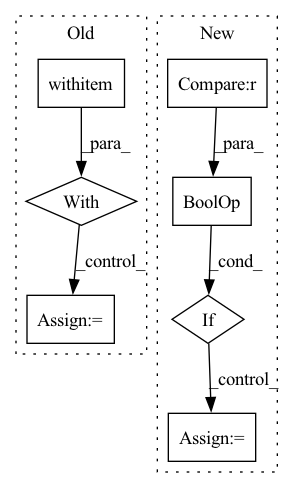

Pattern ID :41664
Before Change
)
if transformation in ["logit", "log", "log1p", "softplus", "relu", "logit"]:
with pytest .raises(AssertionError):
rescaled_parameters = loss.rescale_parameters(parameters, target_scale=target_scale, encoder=normalizer)
else:
rescaled_parameters = loss.rescale_parameters(parameters, target_scale=target_scale, encoder=normalizer)
samples = loss.sample(rescaled_parameters, 1)After Change
cov_factor = torch.tensor([[0.0], [0.0]])
n = 100000
if transformation is not None and "log" in transformation :
mean = mean.log()
std = std / 1e4
loss = MultivariateNormalDistributionLoss()In pattern: SUPERPATTERN
Frequency: 3
Non-data size: 7
Instances Fragment ID: 116963512
Project Name: jdb78/pytorch-forecasting
Commit Name: 09eb7856fd61cd62c765376a0b1b2400fecb4243
Time: 2022-05-14
Author: beitner.jan@bcg.com
File Name: tests/test_metrics.py
M Class Name: AnonimousClass
N Class Name: AnonimousClass
M Method Name: test_MultivariateNormalDistributionLoss(2)
N Method Name: test_MultivariateNormalDistributionLoss(2)
M Parent Class:
N Parent Class:
M File Name: tests/test_metrics.py
N File Name: tests/test_metrics.py
M Start Line: 197
M End Line: 214
N Start Line: 192
N End Line: 205
Before Change
preprocessed_deprioritize_text = embedding_model.preprocess(deprioritize_text)
embedding_deprioritize = embedding_model.embed(preprocessed_deprioritize_text)
with timer ("sentences_conditioning"):
restricted_sentence_ids = filter_sentences(connection,
has_journal=has_journal,
date_range=date_range,
exclusion_text=exclusion_text)After Change
logger.info("Starting run_search")
// Replace empty `deprioritize_text` by None
if deprioritize_text is not None and len(deprioritize_text.strip()) == 0 :
deprioritize_text = None
timer = Timer(verbose=verbose)
Fragment ID: 116963517
Project Name: bluebrain/search
Commit Name: 6dbc2fe8f01adb39650da97fb8473111884cd0c1
Time: 2020-08-04
Author: francesco.casalegno@gmail.com
File Name: src/bbsearch/search.py
M Class Name: AnonimousClass
N Class Name: AnonimousClass
M Method Name: run_search(12)
N Method Name: run_search(12)
M Parent Class:
N Parent Class:
M File Name: src/bbsearch/search.py
N File Name: src/bbsearch/search.py
M Start Line: 210
M End Line: 221
N Start Line: 170
N End Line: 241
Before Change
logging.info(f"Using hyperparameters: {env.hparams}")
logging.debug(f"Using a test experiment config: {env.experiment_config}")
with local_execution_manager (context_path):
if not trial_class:
logging.debug("Loading trial class from experiment configuration")
trial_class = load.load_trial_implementation(env.experiment_config["entrypoint"])
controller = load.load_controller_from_trial(
trial_class=trial_class,After Change
logging.info(f"Using hyperparameters: {env.hparams}")
logging.debug(f"Using a test experiment config: {env.experiment_config}")
if native_context_cls is not None and controller_cls is not None :
// Case 1: test one batch for Native implementation.
controller_cls.pre_execute_hook(env=env, hvd_config=hvd_config)
context = native_context_cls(env=env, hvd_config=hvd_config)
def train_fn() -> None:
controller = cast(Type[det.TrialController], controller_cls).from_native( Fragment ID: 116963507
Project Name: determined-ai/determined
Commit Name: 03270c0aafa01876b93c31eeb61b052807608307
Time: 2020-05-15
Author: shiyuan@determined.ai
File Name: harness/determined/experimental/_native.py
M Class Name: AnonimousClass
N Class Name: AnonimousClass
M Method Name: test_one_batch(4)
N Method Name: test_one_batch(3)
M Parent Class:
N Parent Class:
M File Name: harness/determined/experimental/_native.py
N File Name: harness/determined/experimental/_native.py
M Start Line: 432
M End Line: 466
N Start Line: 325
N End Line: 387